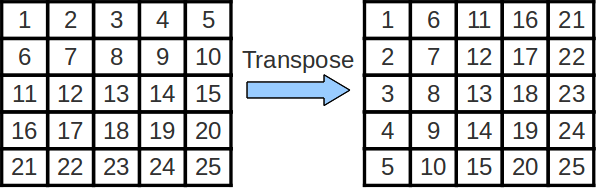
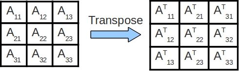

Goals
- Think about how memory access patterns determine cache hit rates.
- Think about which memory access patterns produce GOOD hit rates.
- Learn about a technique for improving your memory access pattern.
Notes
- We will be utilizing the cache portion of Venus! This allows us to visualize cache accesses associated with our code.
- This lab is tricky, this lab is long, this lab is tough. Make sure you know your stuff before checking off and ASK if you do not!
Obtaining the Lab Files
Similar to previous weeks, cd to your lab repository and then get the lab 6 starter files via:
$ git fetch starter $ git merge starter/master
Tools for Cache Visualization in Venus
To understand how caches work is typically one of the hardest tasks for students in 61C at first.
This exercise will use some cool cache visualization tools
to get you more familiar with cache behavior and performance terminology with
the help of the file cache.s.
At this point, read through
cache.s to get a rough idea of what the program does. Make sure you go through what the pseudocode does and what the argument registers hold before you proceed to analyze cache configurations on it.
Here's the magic link of cache.s
- The most important thing to understand is the section labeled "PSEUDOCODE" at the top of the file. When you run cache.s, instructions that perform this pseudocode will be executed. Basically, you'll just either zero out some elements of some array (option 0) or you'll increment them (option 1).
- Which elements you access is determined by the step size (a1) and how many times you do so is determined by the repcount (a2). These two parameters will most directly affect how many cache hits vs. misses will occur. The option (a3) will also change stuff, and of course the cache parameters themselves will too.
For each of the scenarios below, you'll be repeating THESE steps:
- Open the designated file in Venus. (cache.s, magic link)
- In the code for cache.s, set the appropriate Program Parameters as indicated at the beginning of each scenario (by changing the immediates of the commented li instructions in main)
- Simulator-->Cache.
- Set the appropriate Cache Parameters as indicated at the beginning of each scenario.
- As you execute code in Venus, any DATA memory access (load or store) will show up (instruction fetches not shown).
The Cache Simulator will show the state of your data cache. If you reset your code, you will also reset the cache hit/miss rate as well!
IMPORTANT: If you run the code all at once, you will get the final state of the cache and hit rate. You will probably benefit the most from setting a breakpoint in the loop wordLoop right before or after each memory access to see exactly where the hits and misses are coming from.
Exercise 1: A Couple of Memory Access Scenarios
Task: Simulate the following scenarios and record the final cache hit rates with the program in cache.s. Try to reason out what the hit rate will be BEFORE running the code. After running each simulation, make sure you understand WHY you see what you see (the TAs will be asking)!
Do not hesitate to ask questions if you feel confused! This is perfectly normal and the staff is there to help you out!
THE FOLLOWING are good questions to ask yourself as you do these exercises (not checkoff questions):
- How big is your cache block?
- How many consecutive accesses (taking into account the step size) fit within a single block?
- How much data fits in the WHOLE cache?
- How far apart in memory are blocks that map to the same set (and could create conflicts)?
- What is your cache's associativity?
- Where in the cache does a particular block map to?
- When considering why a specific access is a miss or hit: Have you accessed this piece of data before? If so, is it still in the cache or not?
Scenario 1:
Cache Parameters: (set these in the Cache tab)
- Cache Levels: 1
- Block Size: 8
- Number of Blocks: 4
- Associativity: 1 (Venus won't let you change this, why?)
- Enable?: Should be green
- Placement Polict: Direct Mapping
- Block Replacement Policy: LRU
Program Parameters: (set these by initializing the a registers in the code)
- Array Size (a0): 128 (bytes)
- Step Size (a1): 8
- Rep Count (a2): 4
- Option (a3): 0
Tip: If it's hard for you to visualize what's getting pulled into the cache on each memory access just from staring at the code, try getting out some paper and a pencil. Write down what the tag:index:offset breakdown of the 32-bit addresses would be, figure out which memory addresses map to which set in the cache with the index bits, and see if that helps.
Questions:
- What combination of parameters is producing the hit rate you observe? (Hint: Your answer should be of the form: "Because [parameter A] in bytes is exactly equal to [parameter B] in bytes.")
- What is our hit rate if we increase Rep Count arbitrarily? Why?
- How could we modify one program parameter to increase our hit rate? (Hint: Your answer should be of the form: "Change [parameter] to [value]." Note: we don't care if we access the same array elements. Just give us a program parameter modification that would increase the hit rate.
Scenario 2:
Cache Parameters:
- Cache Levels: 1
- Block Size: 16
- Number of Blocks: 16
- Associativity: 4
- Enable?: Should be green
- Placement Polict: N-Way Set Associative
- Block Replacement Policy: LRU
Program Parameters:
- Array Size: 256 (bytes)
- Step Size: 2
- Rep Count: 1
- Option: 1
Questions:
- How many memory accesses are there per iteration of the inner loop? (not the one involving repcount). It's not 1.
- What is the repeating hit/miss pattern? WHY? (Hint: it repeats every 4 accesses).
- This should follow very straightforwardly from the above question: Explain the hit rate in terms of the hit/miss pattern.
- Keeping everything else the same, what happens to our hit rate as Rep Count goes to infinity? Why?
-
You should have noticed that our hit rate was pretty high for
this scenario, and your answer to the previous question should
give you a good understanding of why. IF YOU ARE NOT SURE WHY, consider the size of the array and compare it to the size of the
cache. Now, consider the following:
Suppose we have a program that iterates through a very large array (AKA way bigger than the size of the cache) repcount times. During each Rep, we map a different function to the elements of our array (e.g. if Rep Count = 1024, we map 1024 different functions onto each of the array elements, one per Rep). (For reference, in this scenario, we just had one function (incrementation) and one Rep).
QUESTION: Given the program described above, how can we restructure its array accesses to achieve a hit rate like that achieved in this scenario? Assume that each array element is to be modified independently of the others AKA it doesn't matter if Rep k is applied to element arr[i] before Rep k is applied to element arr[i+1], etc.
HINT: You do not want to iterate through the entire array at once because it's much bigger than your cache. Doing so would reduce the amount of temporal locality your program exhibits, which makes cache hit rate suffer. We want to exhibit more locality so that our caches can take advantage of our predictable behavior. SO, instead, we should try to access __________ of the array at a time and apply all of the _________ to that __________ so we can be completely done with it before moving on, thereby keeping that _________ hot in the cache and not having to circle back to it later on! (The 1st, 3rd, and 4th blanks should be the same. It's not some vocabulary term you should use to fill them in. It's more of an idea that you should have.)
Checkoff [1/3]
- Answer the numbered questions for each of the two scenarios for the person checking you off.
Exercise 2: Loop Ordering and Matrix Multiplication
If you recall, matrices are 2-dimensional data structures wherein each data element is accessed via two indices. To multiply two matrices, we can simply use 3 nested loops, assuming that matrices A, B, and C are all n-by-n and stored in one-dimensional column-major arrays:
for (int i = 0; i < n; i++)
for (int j = 0; j < n; j++)
for (int k = 0; k < n; k++)
C[i+j*n] += A[i+k*n] * B[k+j*n];
Fact: Matrix multiplication operations are at the heart of many linear algebra algorithms, and efficient matrix multiplication is critical for many applications within the applied sciences.
In the above code, note that the loops are ordered i, j, k. If we examine the innermost loop (the one that increments k), we see that it...
- moves through B with stride 1
- moves through A with stride n
- moves through C with stride 0
BUT, the order in which we choose to access the elements of the matrices can have a large impact on performance. Caches perform better (more cache hits, fewer cache misses) when memory accesses take advantage of spatial and temporal locality, utilizing blocks already contained within our cache. Optimizing a program's memory access patterns is essential to obtaining good performance from the memory hierarchy.
Take a glance at matrixMultiply.c. You'll notice that the file contains multiple implementations of matrix multiply with 3 nested loops.
Task: Think about what the strides are for the nested loops in the other five implementations.
Note that the compilation command in the Makefile uses the '-O3' flag. It is important here that we use the '-O3' flag to turn on compiler optimizations. Compile and run this code with the following command, and then answer the questions below:
$ make ex2
This will run some matrix multiplications according to the six different implementations in the file, and it will tell you the speed at which each implementation executed the operation. The unit "Gflops/s" reads, "Giga-floating-point-operations per second." THE BIGGER THE NUMBER THE FASTER IT IS RUNNING!
Checkoff [2/3]
- Which ordering(s) perform best for these 1000-by-1000 matrices? Why?
- Which ordering(s) perform the worst? Why?
- How does the way we stride through the matrices with respect to the innermost loop affect performance?
Exercise 3: Cache Blocking and Matrix Transposition
For this exercise, using the hive machines is recommended! If you are in one of the Soda Lab 27- rooms, you can still ssh from the instructional machines into the hive machines. This is because the hive machines have historically run the tests twice as fast.
Matrix Transposition
Sometimes, we wish to swap the rows and columns of a matrix. This operation is called a "transposition" and an efficient implementation can be quite helpful while performing more complicated linear algebra operations. The transpose of matrix A is often denoted as AT.

Cache Blocking
In the above code for matrix multiplication, note that we are striding across the entire A and B matrices to compute a single value of C. As such, we are constantly accessing new values from memory and obtain very little reuse of cached data! We can improve the amount of data reuse in the caches by implementing a technique called cache blocking. More formally, cache blocking is a technique that attempts to reduce the cache miss rate by further improving the temporal and/or spatial locality of memory accesses. In the case of matrix transposition we consider performing the transposition one block at a time.

Things to note:
In the above image, we transpose each submatrix Aij of matrix A into
its final location in the output matrix, one submatrix at a time. It is important to note that transposing
each individual subsection is equivalent to tranposing the entire matrix.
Since we operate on and finish
transposing each submatrix one at a time, we consolidate our memory accesses to that smaller chunk of memory when transposing
that particular submatrix, which increases the degree of temporal (and spatial) locality that we exhibit, which makes our
cache performance better, which makes our program run faster.
This (if implemented correctly) will result in a substantial improvement in performance. For this lab, you will implement a cache blocking scheme for matrix transposition and analyze its performance.
Your task is to implement cache blocking in the transpose_blocking() function inside transpose.c. By default, the function does nothing, so the benchmark function will report an error. You may NOT assume that the matrix width (n) is a multiple of the blocksize. After you have implemented cache blocking, you can run your code by typing:
$ make ex3 $ ./transpose <n> <blocksize>
Where n, the width of the matrix, and blocksize are parameters that you will specify. You can verify that your code is working by setting n=10000 and blocksize=33. The blocked version should finish significantly faster.
The following section is meant to serve as a guideline for if you have no idea how to start. If you think you know how to use the parameter blocksize, then just jump right in and get started.
Some tips to get started:
Start by looking at the transpose_naive function included in the file. Notice that the index y strides vertically across the WHOLE src matrix in one iteration of the outer loop before resetting to 0. Another way to say this is that the index x only updates after y is done going from 0 all the way to n. This is the behavior which we want to change. We want to step not stride across the array indices.
TL;DR: fill out dst square chunks at a time, where each square chunk is of dimension blocksize by blocksize.
Instead of updating x only when y goes through ALL of 0 through n, we want to jump down to the next row of dst after we stride across the width (horizontal axis) of just a single block. How big is a block? Exactly the number of integers specified by the parameter blocksize.
In addition, we only want to stride vertically through the height (vertical axis) of a block before we move on to the next block. We don't want to make x stride all the way down n rows of dst before we move on to the next block.
Hint: A standard solution needs 4 (four) for loops.
Finally, since we can't assume that n is a multiple of the blocksize, the final block column for each block row will be a little bit cut-off AKA it won't be a full blocksize-by-blocksize square. In addition, the final block row will all be truncated. To fix this problem, you can do the exercise assuming that n is a multiple of the blocksize and then add in a special case somewhere to do nothing when your indices reach out of bounds of the array.
Once your code is working, complete the following exercises and record your answers (we will ask about it during checkoff).
Part 1: Changing Array Sizes
Fix the blocksize to be 20, and run your code with n equal to 100, 1000, 2000, 5000, and 10000. At what point does cache blocked version of transpose become faster than the non-cache blocked version? Why does cache blocking require the matrix to be a certain size before it outperforms the non-cache blocked code?
(Sanity check: the blocked version isn't faster than the naive version until the matrix size is sufficiently big.)
Part 2: Changing Blocksize
Fix n to be 10000, and run your code with blocksize equal to 50, 100, 500, 1000, 5000. How does performance change as the blocksize increases? Why is this the case?
(Sanity check: as you increase the blocksize, the amount of speedup should change in one direction, then change in the other direction.)
Notice that in neither of the last two exercises did we actually know the cache parameters of our machine. We just made the code exhibit a higher degree of locality, and this magically made things go faster! This tells us that caches, regardless of their specific parameters, will always benefit from operating on code which exhibits a high degree of locality.Checkoff [3/3]
- Explain your responses to the above questions to the person checking you off.